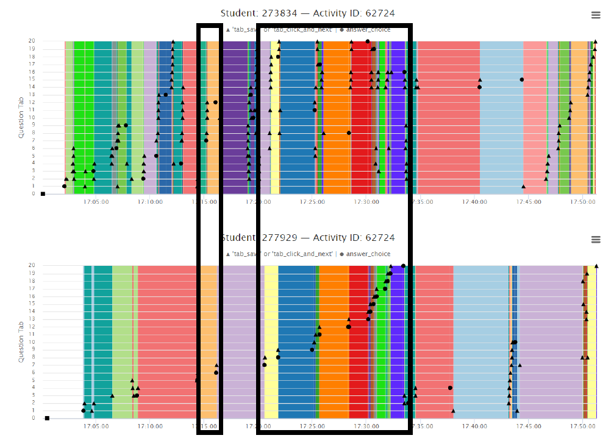

A mixed-methods research program combining statistical modeling, permutation testing, and qualitative visual analysis to identify anomalous patterns in online exam data — producing findings that informed faculty interventions and institutional policy across 15+ courses per semester.
Read the full case study →A practical guide for faculty on GenAI tools in the classroom — synthesizing the emerging landscape of AI writing tools, their academic integrity implications, and concrete strategies for course design, assessment, and detection. Adopted by faculty clients and project managers at UT Austin LAITS.
The case in Modern Hebrew · The University of Texas at Austin
A seven-year research program investigating how grammatical structure and meaning interact in Modern Hebrew. The dissertation combines large-scale corpus analysis, controlled behavioral experimentation, and statistical modeling across three substantive studies — each examining a different aspect of how speakers encode meaning in verb structure. Committee chaired by Dr. John Beavers; defended August 2024.
Each of the dissertation's three substantive chapters represents an independent study with its own methodology and dataset. Two are available as standalone projects on OSF; the third is documented in full within the dissertation.
A large-scale corpus study investigating how a class of Modern Hebrew motion verbs encodes a specific semantic property in its grammatical behavior. Analyzed verb-preposition co-occurrence patterns across an 890-million-token corpus, fitting quasi-binomial regression models in R to test theoretical predictions against observed distributional data. Presented at the International Workshop on Maximalization Strategies in the Event Domain.
A targeted corpus study examining how three related Hebrew loading verbs distribute across different grammatical frames. Built a curated dataset of 27 nouns across 16 location and 11 locatum types, calculated collocation frequencies, and applied quasi-binomial logistic regression to test how verb morphology predicts argument structure. Demonstrated that morphological markedness systematically constrains which arguments can appear where.
A controlled behavioral experiment testing whether different grammatical forms of change-of-state verbs in Modern Hebrew correspond to different underlying meanings. Designed a video-based stimulus task in PsychoPy3, fielded with 60 native Hebrew speakers, and analyzed with mixed-effects logistic regression including by-participant and by-verb random effects. Presented at Workshop on Linguistic Variation at the Interfaces, Barcelona, 2021.
I'm a researcher whose work has always lived at the intersection of language, data, and human behavior. My doctoral training at UT Austin focused on how people construct and interpret meaning — work that combined large-scale corpus analysis with surveys and qualitative interviews to understand cognition at scale.
Most recently, I led a mixed-methods research program supporting 15+ online courses per semester, where I coordinated stakeholders, analyzed behavioral data across hundreds of assessments, and translated findings into clear recommendations that shaped policy and program decisions at the university level.
I'm now bringing that toolkit to industry — to roles where rigorous research connects directly to decisions about how products, services, and experiences meet real people.